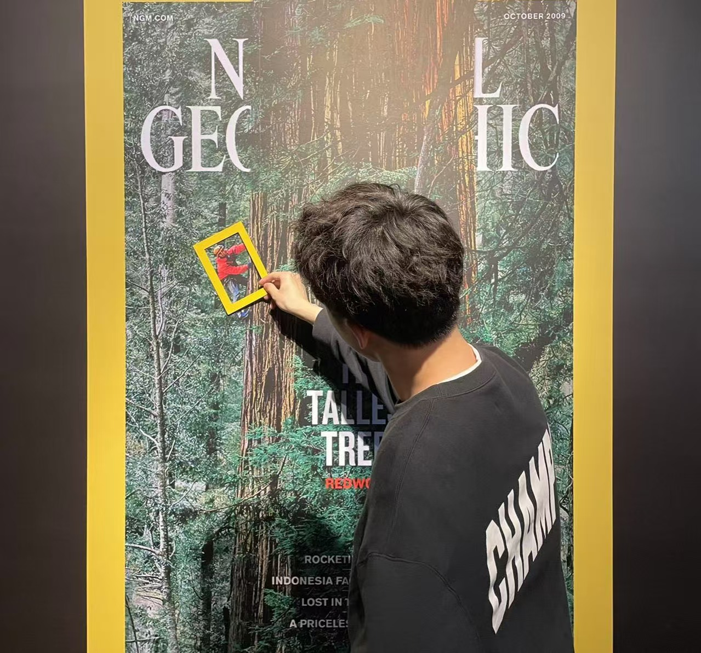

arXiv, 2026 · Project Lead ·
paper

I lead the humanoid foundation model team at LimX Dynamics, where we built our motion-mimic system and whole-body tracking system (System 0) from the ground up. I'm broadly interested in reinforcement learning, robot learning, multimodal models, and generative AI — all in service of one long-term goal: building robots that perceive, reason, and act like humans.
Previously I was a Senior Researcher at Tencent (2023–2025), working on reinforcement learning and game AI. I received my Ph.D. in 2023 from the University of Science and Technology of China, advised by Prof. Zhibo Chen and Prof. Weiping Li. During my Ph.D., I was a Visiting Ph.D. at the National University of Singapore (2022–2023), advised by Prof. Xinchao Wang, and a Research Intern at Microsoft Research Asia (2020–2022) with Dr. Cuiling Lan and Prof. Wenjun Zeng.
Hiring We're hiring at LimX Dynamics — full-time researchers/engineers and interns in robot learning and humanoid foundation models. Drop me a CV at tao@limxdynamics.com.
Selected Publications
Full list on my Google Scholar. (* equal contribution)
Champion solution in the Canton Tower Robot Run Up Competition.
Selected Open-Source Projects
Segment Anything meets image inpainting — click-to-remove, fill-anything, replace-anything pipelines built on SAM and diffusion models.
More on GitHub.
Experience
2026.02 – now
Head & Tech Lead, Humanoid Foundation Models
Leading the humanoid foundation model team — whole-body tracking (System 0) and its applications (VLA, LAM, etc).
2025.03 – 2026.02
Member of Technical Staff
Humanoid whole-body control and motion mimic.
2023.07 – 2025.02
Senior Researcher, JueWu (绝悟) AI Team, AI Lab
Reinforcement learning and game AI.
2022.07 – 2022.08
Research Intern, MoreFun AI Team, MoreFun Studios
Reinforcement learning and game AI.
2020.07 – 2022.01
Research Intern, Intelligent Multimedia (IM)
Data-efficient reinforcement learning, representation learning.
Education
2018 – 2023
Ph.D., Electronic Engineering & Information Science,
University of Science and Technology of China
Advised by Prof. Zhibo Chen and Prof. Weiping Li.
2022 – 2023
Visiting Ph.D., Electrical and Computer Engineering,
National University of Singapore
Advised by Prof. Xinchao Wang.
2014 – 2018
B.Eng., Electronics & Information Engineering,
Anhui University
Selected Awards
- 2025 Outstanding Employee, LimX Dynamics
- 2025 Champion, Canton Tower Robot Run Up Competition
- 2024 Tencent Knowledge Award
- 2023 Outstanding Ph.D. Graduate of USTC
- 2023 Rising Star in AI, KAUST (<20% selected globally, invited talk)
- 2022 Champion, CVPR 2022 Challenge on Learned Image Compression (Perceptual Track)
- 2022 NeurIPS Travel Award
- 2020 AAAI Travel Award
- 2019 Champion, ICME 2019 Grand Challenge on Learning-Based Image Inpainting
- 2017 Honorable Prize, International Mathematical Contest in Modeling
- 2016 First Prize, China Undergraduate Mathematical Contest in Modeling
Service
Reviewer for NeurIPS, ICML, ICLR, CVPR, ICCV, ECCV, AAAI, ICRA, TPAMI, IJCV, TMM.
Contact
The fastest way to reach me is by email — tao@limxdynamics.com for work, yutao666@mail.ustc.edu.cn for personal. I'm also on GitHub, Google Scholar, LinkedIn, Twitter/X, Zhihu, and WeChat geekyutao.